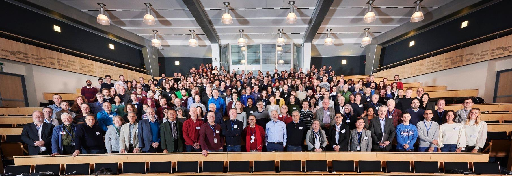

Dr Praveen Kumar has earned his PhD in particle physics, specializing in the particle identification and calibration of the Deep
Underground Neutrino Experiment (DUNE) far detector (FD). His research encompasses generating and simulating
cosmic-ray muon events, energy calibration using various particles, and detailed analysis of particle
reconstruction and identification within the DUNE FD. Additionally, he has made significant contributions to hardware and
instrumentation work, particularly in the realm of Liquid Argon Time Projection Chamber (LArTPC) R&D,
demonstrating a holistic approach to advancing particle physics.
Outside academia, Dr Praveen finds solace in music, literature, and sports, particularly football and cricket.
With a diverse skill set and a solid foundation in both analytical and hardware aspects of particle physics, he
stands poised to make substantial contributions to the field, shaping the future landscape of high-energy
physics
research.

Praveen with DUNE collaborators at CERN in Geneva, Switzerland